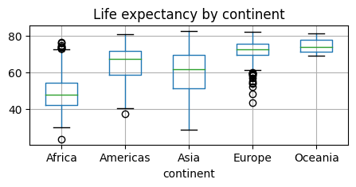
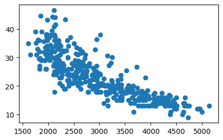
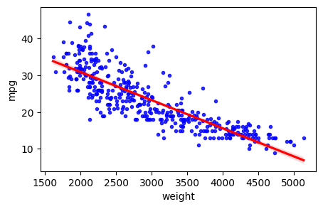
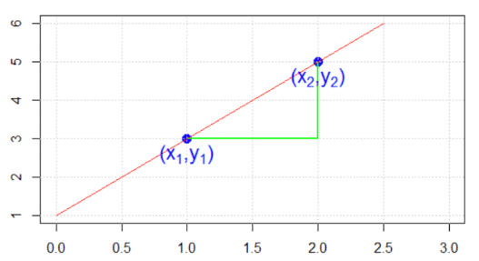
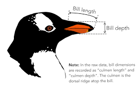
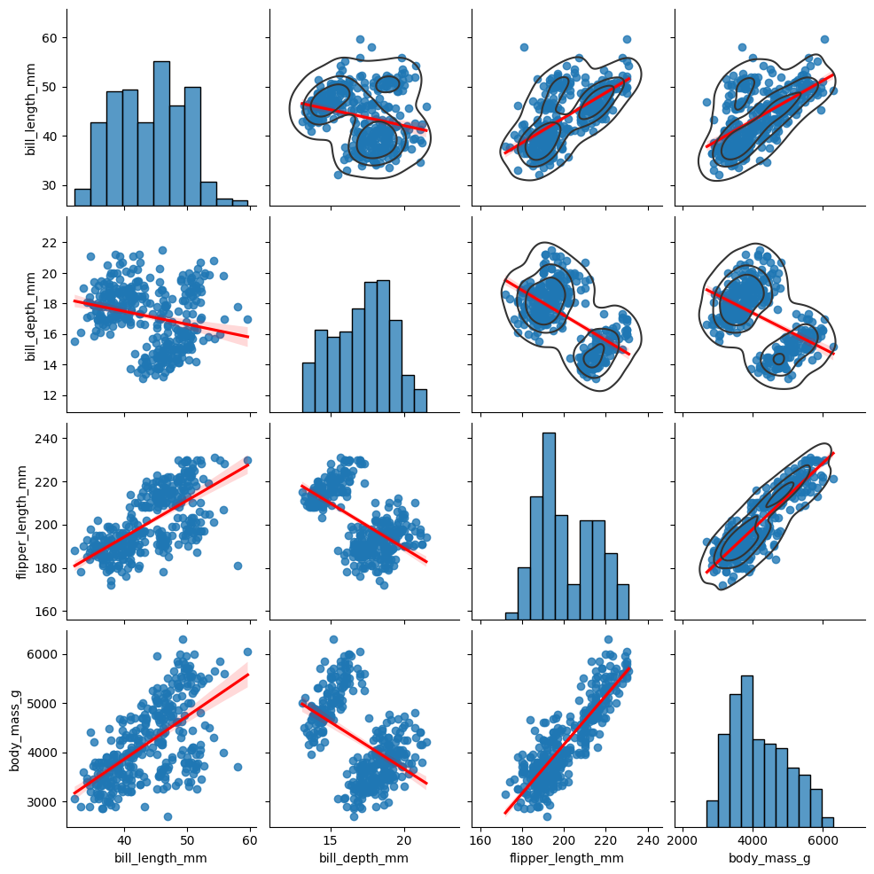
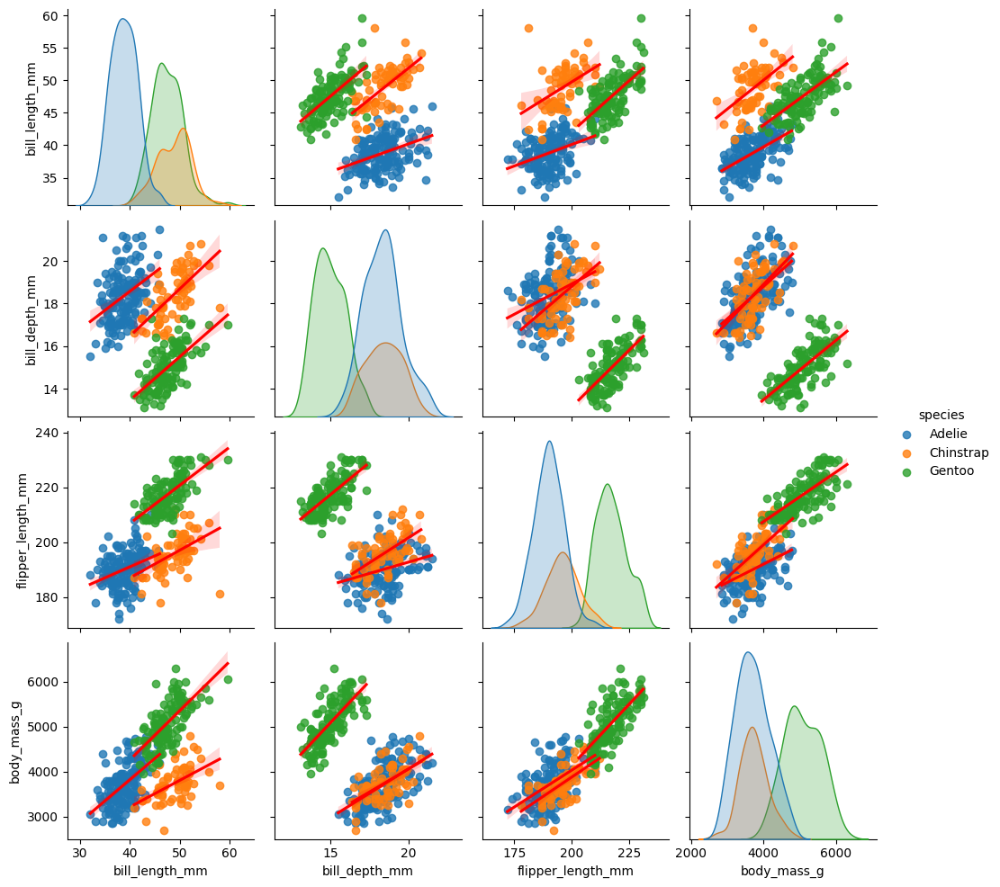
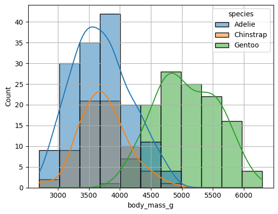
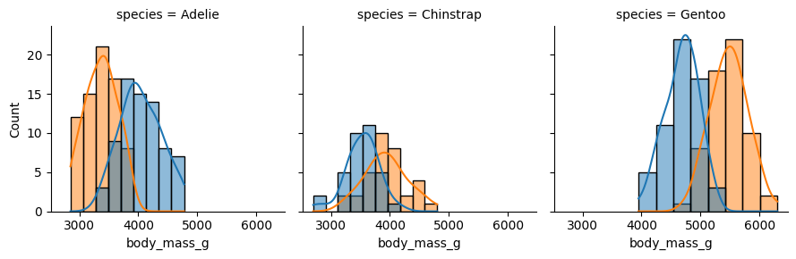

import pandas as pd
import numpy as np
import matplotlib.pyplot as plt
import seaborn as sns
from numpy.random import default_rng
import warnings8 Intro to Models
In this lecture we will learn about modeling data for the first time. After this lesson, you should know what we generally mean by a “model”, what linear regression is and how to interpret the output. But first we need to introduce a new data type: categorical variables.
Online Resources:
Chapter 7.5 of our textbook introduces categorical variables.
import statsmodels.api as sm
import statsmodels.formula.api as smf#!pip install gapminder
from gapminder import gapmindergapminder.head()| country | continent | year | lifeExp | pop | gdpPercap | |
|---|---|---|---|---|---|---|
| 0 | Afghanistan | Asia | 1952 | 28.801 | 8425333 | 779.445314 |
| 1 | Afghanistan | Asia | 1957 | 30.332 | 9240934 | 820.853030 |
| 2 | Afghanistan | Asia | 1962 | 31.997 | 10267083 | 853.100710 |
| 3 | Afghanistan | Asia | 1967 | 34.020 | 11537966 | 836.197138 |
| 4 | Afghanistan | Asia | 1972 | 36.088 | 13079460 | 739.981106 |
Categorical variables
As a motivation, take another look at the gapminder data which contains variables of a mixed type: numeric columns along with string type columns which contain repeated instances of a smaller set of distinct or discrete values which
- are not numeric (but could be represented as numbers)
- cannot really be ordered
- typically take on a finite set of values, or categories.
We refer to these data types as categorical.
We have already seen functions like unique and value_counts, which enable us to extract the distinct values from an array and compute their frequencies.
Boxplots and grouping operations typically use a categorical variable to compute summaries of a numerical variables for each category separately, e.g.
gapminder.boxplot(column = "lifeExp", by="continent",figsize=(5, 2));
plt.title('Life expectancy by continent')
# Remove the default suptitle
plt.suptitle("");
pandas has a special Categorical extension type for holding data that uses the integer-based categorical representation or encoding. This is a popular data compression technique for data with many occurrences of similar values and can provide significantly faster performance with lower memory use, especially for string data.
gapminder.info()<class 'pandas.core.frame.DataFrame'>
RangeIndex: 1704 entries, 0 to 1703
Data columns (total 6 columns):
# Column Non-Null Count Dtype
--- ------ -------------- -----
0 country 1704 non-null category
1 continent 1704 non-null object
2 year 1704 non-null int64
3 lifeExp 1704 non-null float64
4 pop 1704 non-null int64
5 gdpPercap 1704 non-null float64
dtypes: category(1), float64(2), int64(2), object(1)
memory usage: 75.2+ KBgapminder['country'] = gapminder['country'].astype('category')
gapminder.info()<class 'pandas.core.frame.DataFrame'>
RangeIndex: 1704 entries, 0 to 1703
Data columns (total 6 columns):
# Column Non-Null Count Dtype
--- ------ -------------- -----
0 country 1704 non-null category
1 continent 1704 non-null object
2 year 1704 non-null int64
3 lifeExp 1704 non-null float64
4 pop 1704 non-null int64
5 gdpPercap 1704 non-null float64
dtypes: category(1), float64(2), int64(2), object(1)
memory usage: 75.2+ KBWe will come back to the usefulness of this later.
Tables as models
For now let us look at our first “model”:
titanic = sns.load_dataset('titanic')
titanic["class3"] = (titanic["pclass"]==3)
titanic["male"] = (titanic["sex"]=="male")
titanic.head()| survived | pclass | sex | age | sibsp | parch | fare | embarked | class | who | adult_male | deck | embark_town | alive | alone | class3 | male | |
|---|---|---|---|---|---|---|---|---|---|---|---|---|---|---|---|---|---|
| 0 | 0 | 3 | male | 22.0 | 1 | 0 | 7.2500 | S | Third | man | True | NaN | Southampton | no | False | True | True |
| 1 | 1 | 1 | female | 38.0 | 1 | 0 | 71.2833 | C | First | woman | False | C | Cherbourg | yes | False | False | False |
| 2 | 1 | 3 | female | 26.0 | 0 | 0 | 7.9250 | S | Third | woman | False | NaN | Southampton | yes | True | True | False |
| 3 | 1 | 1 | female | 35.0 | 1 | 0 | 53.1000 | S | First | woman | False | C | Southampton | yes | False | False | False |
| 4 | 0 | 3 | male | 35.0 | 0 | 0 | 8.0500 | S | Third | man | True | NaN | Southampton | no | True | True | True |
vals1, cts1 = np.unique(titanic["class3"], return_counts=True)
print(cts1)
print(vals1)[400 491]
[False True]print("The mean survival on the Titanic was", np.mean(titanic.survived))The mean survival on the Titanic was 0.3838383838383838ConTbl = pd.crosstab(titanic["sex"], titanic["survived"])
ConTbl| survived | 0 | 1 |
|---|---|---|
| sex | ||
| female | 81 | 233 |
| male | 468 | 109 |
What are the estimated survival probabilities?
#the good old groupby way:
bySex = titanic.groupby("sex").survived
bySex.mean()sex
female 0.742038
male 0.188908
Name: survived, dtype: float64p3D = pd.crosstab([titanic["sex"], titanic["class3"]], titanic["survived"])
p3D| survived | 0 | 1 | |
|---|---|---|---|
| sex | class3 | ||
| female | False | 9 | 161 |
| True | 72 | 72 | |
| male | False | 168 | 62 |
| True | 300 | 47 |
What are the estimated survival probabilities?
#the good old groupby way:
bySex = titanic.groupby(["sex", "class3"]).survived
bySex.mean()sex class3
female False 0.947059
True 0.500000
male False 0.269565
True 0.135447
Name: survived, dtype: float64The above table can be looked at as a model, which is defined as a function which takes inputs x and “spits out” a prediction:
\(y = f(\mathbf{x})\)
In our case, the inputs are \(x_1=\text{sex}\), \(x_2=\text{class3}\), and the output is the estimated survival probability!
It is evident that we could keep adding more input variables and make finer and finer grained predictions.
Linear Models
lsFit = smf.ols('survived ~ sex:class3-1', titanic).fit()
lsFit.summary().tables[1]| coef | std err | t | P>|t| | [0.025 | 0.975] | |
|---|---|---|---|---|---|---|
| sex[female]:class3[False] | 0.9471 | 0.029 | 32.200 | 0.000 | 0.889 | 1.005 |
| sex[male]:class3[False] | 0.2696 | 0.025 | 10.660 | 0.000 | 0.220 | 0.319 |
| sex[female]:class3[True] | 0.5000 | 0.032 | 15.646 | 0.000 | 0.437 | 0.563 |
| sex[male]:class3[True] | 0.1354 | 0.021 | 6.579 | 0.000 | 0.095 | 0.176 |
Modeling Missing Values
We have already seen how to detect and how to replace missing values. But the latter -until now- was rather crude: we often replaced all values with a “global” average.
Clearly, we can do better than replacing all missing entries in the survived column with the average \(0.38\).
rng = default_rng()
missingRows = rng.integers(0,890,20)
print(missingRows)
#introduce missing values
titanic.iloc[missingRows,0] = np.nan
np.sum(titanic.survived.isna())[515 560 396 252 159 117 151 835 534 871 727 137 609 214 819 729 232 553
727 432]19predSurv = lsFit.predict()
print( len(predSurv))
predSurv[titanic.survived.isna()]891array([0.26956522, 0.26956522, 0.94705882, 0.13544669, 0.13544669,
0.26956522, 0.26956522, 0.5 , 0.94705882, 0.26956522,
0.5 , 0.13544669, 0.13544669, 0.94705882, 0.5 ,
0.5 , 0.13544669, 0.94705882, 0.94705882])From categorical to numerical relations
url = "https://raw.githubusercontent.com/markusloecher/DataScience2018/master/data/Auto.csv"
auto = pd.read_csv(url)
auto.head()| mpg | cylinders | displacement | horsepower | weight | acceleration | year | origin | name | Manufacturer | |
|---|---|---|---|---|---|---|---|---|---|---|
| 0 | 18.0 | 8 | 307.0 | 130 | 3504 | 12.0 | 70 | 1 | chevrolet chevelle malibu | chevrolet |
| 1 | 15.0 | 8 | 350.0 | 165 | 3693 | 11.5 | 70 | 1 | buick skylark 320 | buick |
| 2 | 18.0 | 8 | 318.0 | 150 | 3436 | 11.0 | 70 | 1 | plymouth satellite | plymouth |
| 3 | 16.0 | 8 | 304.0 | 150 | 3433 | 12.0 | 70 | 1 | amc rebel sst | amc |
| 4 | 17.0 | 8 | 302.0 | 140 | 3449 | 10.5 | 70 | 1 | ford torino | ford |
plt.figure(figsize=(5,3))
plt.scatter(x=auto["weight"], y=auto["mpg"]);
Linear Regression
We can roughly estimate, i.e. “model” this relationship with a straight line:
\[ y = \beta_0 + \beta_1 x \]
plt.figure(figsize=(5,3))
tmp=sns.regplot(x=auto["weight"], y=auto["mpg"], order=1, ci=95,
scatter_kws={'color':'b', 's':9}, line_kws={'color':'r'})
Remind yourself of the definition of the slope of a straight line

\[ \beta_1 = \frac{\Delta y}{\Delta x} = \frac{y_2-y_1}{x_2-x_1} \]
est = smf.ols('mpg ~ weight', auto).fit()
est.summary().tables[1]| coef | std err | t | P>|t| | [0.025 | 0.975] | |
|---|---|---|---|---|---|---|
| Intercept | 46.2165 | 0.799 | 57.867 | 0.000 | 44.646 | 47.787 |
| weight | -0.0076 | 0.000 | -29.645 | 0.000 | -0.008 | -0.007 |
np.corrcoef(auto["weight"], auto["mpg"])array([[ 1. , -0.83224421],
[-0.83224421, 1. ]])Penguins

import seaborn as sns
import matplotlib.pyplot as plt
penguins = sns.load_dataset("penguins")
penguins| species | island | bill_length_mm | bill_depth_mm | flipper_length_mm | body_mass_g | sex | |
|---|---|---|---|---|---|---|---|
| 0 | Adelie | Torgersen | 39.1 | 18.7 | 181.0 | 3750.0 | Male |
| 1 | Adelie | Torgersen | 39.5 | 17.4 | 186.0 | 3800.0 | Female |
| 2 | Adelie | Torgersen | 40.3 | 18.0 | 195.0 | 3250.0 | Female |
| 3 | Adelie | Torgersen | NaN | NaN | NaN | NaN | NaN |
| 4 | Adelie | Torgersen | 36.7 | 19.3 | 193.0 | 3450.0 | Female |
| ... | ... | ... | ... | ... | ... | ... | ... |
| 339 | Gentoo | Biscoe | NaN | NaN | NaN | NaN | NaN |
| 340 | Gentoo | Biscoe | 46.8 | 14.3 | 215.0 | 4850.0 | Female |
| 341 | Gentoo | Biscoe | 50.4 | 15.7 | 222.0 | 5750.0 | Male |
| 342 | Gentoo | Biscoe | 45.2 | 14.8 | 212.0 | 5200.0 | Female |
| 343 | Gentoo | Biscoe | 49.9 | 16.1 | 213.0 | 5400.0 | Male |
344 rows × 7 columns
warnings.filterwarnings("ignore")
g=sns.pairplot(penguins, kind="reg", plot_kws={'line_kws':{'color':'red'}}, corner=False);#
g.map_upper(sns.kdeplot, levels=4, color=".2");
plt.show()
The “data tells us” that * bill depth seems to decrease with bill length * flipper length and body mass seem to decrease with bill depth. * flipper length and body mass seem to increase with bill length.
Can we fit simple regression lines to prove our visual hypothesis?
import statsmodels.api as sm
import statsmodels.formula.api as smf
lm1 = smf.ols('bill_depth_mm ~ bill_length_mm', penguins).fit()
lm1.summary().tables[1]
lm2 = smf.ols('flipper_length_mm ~ bill_depth_mm', penguins).fit()
lm2.summary().tables[1]| coef | std err | t | P>|t| | [0.025 | 0.975] | |
|---|---|---|---|---|---|---|
| Intercept | 272.2190 | 5.413 | 50.294 | 0.000 | 261.573 | 282.865 |
| bill_depth_mm | -4.1574 | 0.314 | -13.261 | 0.000 | -4.774 | -3.541 |
BUT: the interpretation of the data is model dependent ! The data does not “tell the truth” by itself:
sns.pairplot(penguins, hue="species", kind="reg", plot_kws={'line_kws':{'color':'red'}}, corner=False);
plt.show()
lm2a = smf.ols('flipper_length_mm ~ bill_depth_mm*species', penguins).fit()
lm2a.summary().tables[1]| coef | std err | t | P>|t| | [0.025 | 0.975] | |
|---|---|---|---|---|---|---|
| Intercept | 159.6189 | 6.943 | 22.990 | 0.000 | 145.962 | 173.276 |
| species[T.Chinstrap] | -30.9222 | 13.155 | -2.351 | 0.019 | -56.798 | -5.046 |
| species[T.Gentoo] | -12.3945 | 10.439 | -1.187 | 0.236 | -32.928 | 8.139 |
| bill_depth_mm | 1.6534 | 0.378 | 4.379 | 0.000 | 0.911 | 2.396 |
| bill_depth_mm:species[T.Chinstrap] | 1.9907 | 0.714 | 2.790 | 0.006 | 0.587 | 3.394 |
| bill_depth_mm:species[T.Gentoo] | 3.0163 | 0.642 | 4.698 | 0.000 | 1.754 | 4.279 |
Grouping with multiple categories
warnings.filterwarnings("ignore")
sns.histplot(data=penguins, x="body_mass_g", kde=True, hue = "species");plt.grid();
g = sns.FacetGrid(penguins, col="species")
g.map_dataframe(sns.histplot, x="body_mass_g", hue = "sex", kde=True);
Further Reading: